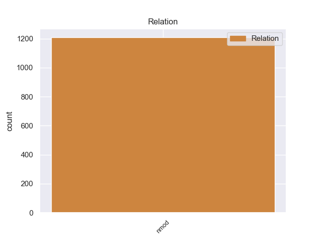
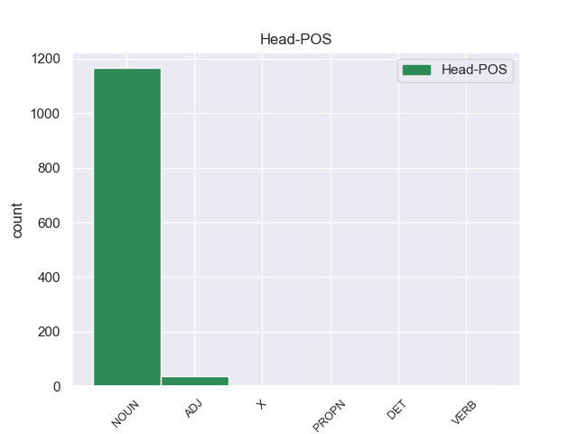
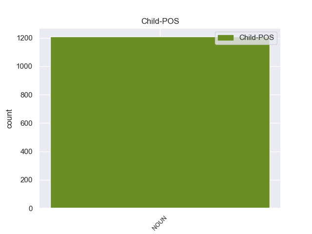

Distribution of features within this leaf



Agreement Rules sorted by frequency.
- When the dependent token is the nominal modifier(nmod) of the head token, and the head token is NOUN and the dependent token is NOUN.
1 Μια _ _ _ _ 0 _ _ _
2 δημόσια _ _ _ _ 0 _ _ _
3 σύμβαση _ _ _ _ 0 _ _ _
4 δεν _ _ _ _ 0 _ _ _
5 μπορεί _ _ _ _ 0 _ _ _
6 να _ _ _ _ 0 _ _ _
7 περιλαμβάνει _ _ _ _ 0 _ _ _
8 την _ _ _ _ 0 _ _ _
9 απαίτηση _ _ _ _ 0 _ _ _
10 από _ _ _ _ 0 _ _ _
11 τους _ _ _ _ 0 _ _ _
12 κατασκευαστές κατασκευαστέ NOUN _ Gender=Masc|Number=Plur 0 _ _ _
13 λεωφορείων λεωφορείω NOUN _ Gender=Masc|Number=Plur 12 nmod _ _
14 να _ _ _ _ 0 _ _ _
15 κάνουν _ _ _ _ 0 _ _ _
16 περιβαλλοντική _ _ _ _ 0 _ _ _
17 εκτίμηση _ _ _ _ 0 _ _ _
18 για _ _ _ _ 0 _ _ _
19 το _ _ _ _ 0 _ _ _
20 Ελσίνκι _ _ _ _ 0 _ _ _
21 πριν _ _ _ _ 0 _ _ _
22 να _ _ _ _ 0 _ _ _
23 υποβάλλουν _ _ _ _ 0 _ _ _
24 τη _ _ _ _ 0 _ _ _
25 σύμβαση _ _ _ _ 0 _ _ _
26 . _ _ _ _ 0 _ _ _
1 Σχετικά _ _ _ _ 0 _ _ _
2 με _ _ _ _ 0 _ _ _
3 το _ _ _ _ 0 _ _ _
4 ζήτημα _ _ _ _ 0 _ _ _
5 της _ _ _ _ 0 _ _ _
6 σύμβασης _ _ _ _ 0 _ _ _
7 για _ _ _ _ 0 _ _ _
8 τα _ _ _ _ 0 _ _ _
9 λεωφορεία _ _ _ _ 0 _ _ _
10 σ _ _ _ _ 0 _ _ _
11 το _ _ _ _ 0 _ _ _
12 Ελσίνκι _ _ _ _ 0 _ _ _
13 , _ _ _ _ 0 _ _ _
14 σίγουρα _ _ _ _ 0 _ _ _
15 οι _ _ _ _ 0 _ _ _
16 αρχές _ _ _ _ 0 _ _ _
17 του _ _ _ _ 0 _ _ _
18 Ελσίνκι _ _ _ _ 0 _ _ _
19 ήταν _ _ _ _ 0 _ _ _
20 οι _ _ _ _ 0 _ _ _
21 αρμόδιες _ _ _ _ 0 _ _ _
22 για _ _ _ _ 0 _ _ _
23 να _ _ _ _ 0 _ _ _
24 αποφασίσουν _ _ _ _ 0 _ _ _
25 , _ _ _ _ 0 _ _ _
26 πριν _ _ _ _ 0 _ _ _
27 να _ _ _ _ 0 _ _ _
28 προκηρύξουν _ _ _ _ 0 _ _ _
29 το _ _ _ _ 0 _ _ _
30 διαγωνισμό _ _ _ _ 0 _ _ _
31 για _ _ _ _ 0 _ _ _
32 την _ _ _ _ 0 _ _ _
33 ανάθεση _ _ _ _ 0 _ _ _
34 της _ _ _ _ 0 _ _ _
35 σύμβασης _ _ _ _ 0 _ _ _
36 , _ _ _ _ 0 _ _ _
37 ποιο _ _ _ _ 0 _ _ _
38 είναι _ _ _ _ 0 _ _ _
39 το _ _ _ _ 0 _ _ _
40 βέλτιστο βέλτιστο ADJ _ Gender=Masc|Number=Sing 0 _ _ _
41 και _ _ _ _ 0 _ _ _
42 το _ _ _ _ 0 _ _ _
43 πιο _ _ _ _ 0 _ _ _
44 φιλικό _ _ _ _ 0 _ _ _
45 προς _ _ _ _ 0 _ _ _
46 το _ _ _ _ 0 _ _ _
47 περιβάλλον _ _ _ _ 0 _ _ _
48 λεωφορείο λεωφορείο NOUN _ Gender=Masc|Number=Sing 40 nmod _ _
49 το _ _ _ _ 0 _ _ _
50 οποίο _ _ _ _ 0 _ _ _
51 επιθυμούσαν _ _ _ _ 0 _ _ _
52 . _ _ _ _ 0 _ _ _
1 ( _ _ _ _ 0 _ _ _
2 Un _ _ _ _ 0 _ _ _
3 ejemplo _ _ _ _ 0 _ _ _
4 es _ _ _ _ 0 _ _ _
5 el _ _ _ _ 0 _ _ _
6 Pakki _ _ _ _ 0 _ _ _
7 una _ _ _ _ 0 _ _ _
8 variedad _ _ _ _ 0 _ _ _
9 de _ _ _ _ 0 _ _ _
10 Hyderabadi _ _ _ _ 0 _ _ _
11 biryani _ _ _ _ 0 _ _ _
12 ) _ _ _ _ 0 _ _ _
13 se _ _ _ _ 0 _ _ _
14 emplea _ _ _ _ 0 _ _ _
15 el _ _ _ _ 0 _ _ _
16 azafrán _ _ _ _ 0 _ _ _
17 en _ _ _ _ 0 _ _ _
18 la _ _ _ _ 0 _ _ _
19 India _ _ _ _ 0 _ _ _
20 en _ _ _ _ 0 _ _ _
21 los _ _ _ _ 0 _ _ _
22 dulces _ _ _ _ 0 _ _ _
23 y _ _ _ _ 0 _ _ _
24 postres _ _ _ _ 0 _ _ _
25 cuya _ _ _ _ 0 _ _ _
26 base _ _ _ _ 0 _ _ _
27 es _ _ _ _ 0 _ _ _
28 la _ _ _ _ 0 _ _ _
29 leche _ _ _ _ 0 _ _ _
30 tales _ _ _ _ 0 _ _ _
31 como _ _ _ _ 0 _ _ _
32 el _ _ _ _ 0 _ _ _
33 gulab _ _ _ _ 0 _ _ _
34 jamun _ _ _ _ 0 _ _ _
35 , _ _ _ _ 0 _ _ _
36 kulfi _ _ _ _ 0 _ _ _
37 , _ _ _ _ 0 _ _ _
38 double _ _ _ _ 0 _ _ _
39 ka _ _ _ _ 0 _ _ _
40 meetha _ _ _ _ 0 _ _ _
41 , _ _ _ _ 0 _ _ _
42 y _ _ _ _ 0 _ _ _
43 el _ _ _ _ 0 _ _ _
44 " _ _ _ _ 0 _ _ _
45 lassi lassi X _ Gender=Masc|Number=Sing 0 _ _ _
46 a _ _ _ _ 0 _ _ _
47 el _ _ _ _ 0 _ _ _
48 azafrán azafrán NOUN _ Gender=Masc|Number=Sing 45 nmod _ SpaceAfter=No
49 " _ _ _ _ 0 _ _ _
50 , _ _ _ _ 0 _ _ _
51 que _ _ _ _ 0 _ _ _
52 es _ _ _ _ 0 _ _ _
53 una _ _ _ _ 0 _ _ _
54 mezcla _ _ _ _ 0 _ _ _
55 de _ _ _ _ 0 _ _ _
56 Jodhpuri _ _ _ _ 0 _ _ _
57 yogurt _ _ _ _ 0 _ _ _
58 para _ _ _ _ 0 _ _ _
59 beber _ _ _ _ 0 _ _ _
60 . _ _ _ _ 0 _ _ _
1 Sin _ _ _ _ 0 _ _ _
2 entrar _ _ _ _ 0 _ _ _
3 a _ _ _ _ 0 _ _ _
4 valorar _ _ _ _ 0 _ _ _
5 las _ _ _ _ 0 _ _ _
6 razones _ _ _ _ 0 _ _ _
7 de _ _ _ _ 0 _ _ _
8 esos _ _ _ _ 0 _ _ _
9 hechos _ _ _ _ 0 _ _ _
10 , _ _ _ _ 0 _ _ _
11 uno _ _ _ _ 0 _ _ _
12 de _ _ _ _ 0 _ _ _
13 los _ _ _ _ 0 _ _ _
14 vídeos _ _ _ _ 0 _ _ _
15 que _ _ _ _ 0 _ _ _
16 más _ _ _ _ 0 _ _ _
17 ha _ _ _ _ 0 _ _ _
18 circulado _ _ _ _ 0 _ _ _
19 por _ _ _ _ 0 _ _ _
20 la _ _ _ _ 0 _ _ _
21 red _ _ _ _ 0 _ _ _
22 y _ _ _ _ 0 _ _ _
23 por _ _ _ _ 0 _ _ _
24 los _ _ _ _ 0 _ _ _
25 medios _ _ _ _ 0 _ _ _
26 informativos _ _ _ _ 0 _ _ _
27 es _ _ _ _ 0 _ _ _
28 el el DET _ Definite=Def|Gender=Masc|Number=Sing|PronType=Art 0 _ _ _
29 de _ _ _ _ 0 _ _ _
30 un _ _ _ _ 0 _ _ _
31 chaval chaval NOUN _ Gender=Masc|Number=Sing 28 nmod _ SpaceAfter=No
32 , _ _ _ _ 0 _ _ _
33 un _ _ _ _ 0 _ _ _
34 joven _ _ _ _ 0 _ _ _
35 estudiante _ _ _ _ 0 _ _ _
36 de _ _ _ _ 0 _ _ _
37 20 _ _ _ _ 0 _ _ _
38 años _ _ _ _ 0 _ _ _
39 de _ _ _ _ 0 _ _ _
40 origen _ _ _ _ 0 _ _ _
41 malayo _ _ _ _ 0 _ _ _
42 que _ _ _ _ 0 _ _ _
43 está _ _ _ _ 0 _ _ _
44 tirado _ _ _ _ 0 _ _ _
45 herido _ _ _ _ 0 _ _ _
46 en _ _ _ _ 0 _ _ _
47 el _ _ _ _ 0 _ _ _
48 suelo _ _ _ _ 0 _ _ _
49 , _ _ _ _ 0 _ _ _
50 sangrando _ _ _ _ 0 _ _ _
51 . _ _ _ _ 0 _ _ _
1 Σε _ _ _ _ 0 _ _ _
2 τελική _ _ _ _ 0 _ _ _
3 ανάλυση _ _ _ _ 0 _ _ _
4 , _ _ _ _ 0 _ _ _
5 σ _ _ _ _ 0 _ _ _
6 το _ _ _ _ 0 _ _ _
7 παράδειγμα παράδειγμα NOUN _ Gender=Masc|Number=Sing 14 nmod _ _
8 του _ _ _ _ 0 _ _ _
9 Λουξεμβούργου _ _ _ _ 0 _ _ _
10 είναι _ _ _ _ 0 _ _ _
11 και _ _ _ _ 0 _ _ _
12 οι _ _ _ _ 0 _ _ _
13 δύο _ _ _ _ 0 _ _ _
14 χαμένοι χαμένο VERB _ Gender=Masc|Number=Plur|VerbForm=Part 0 _ _ _
15 , _ _ _ _ 0 _ _ _
16 κάτι _ _ _ _ 0 _ _ _
17 που _ _ _ _ 0 _ _ _
18 επισημάναμε _ _ _ _ 0 _ _ _
19 ακόμα _ _ _ _ 0 _ _ _
20 μια _ _ _ _ 0 _ _ _
21 φορά _ _ _ _ 0 _ _ _
22 σ _ _ _ _ 0 _ _ _
23 την _ _ _ _ 0 _ _ _
24 Επιτροπή _ _ _ _ 0 _ _ _
25 με _ _ _ _ 0 _ _ _
26 την _ _ _ _ 0 _ _ _
27 περιβόητη _ _ _ _ 0 _ _ _
28 έκθεση _ _ _ _ 0 _ _ _
29 van _ _ _ _ 0 _ _ _
30 Dam _ _ _ _ 0 _ _ _
31 . _ _ _ _ 0 _ _ _
Disagree Examples:
1 Una _ _ _ _ 0 _ _ _
2 de _ _ _ _ 0 _ _ _
3 las _ _ _ _ 0 _ _ _
4 primeras _ _ _ _ 0 _ _ _
5 jugadas jugada NOUN _ Gender=Fem|Number=Plur 0 _ _ _
6 de _ _ _ _ 0 _ _ _
7 el _ _ _ _ 0 _ _ _
8 partido partido NOUN _ Gender=Masc|Number=Sing 5 nmod _ _
9 estuvo _ _ _ _ 0 _ _ _
10 en _ _ _ _ 0 _ _ _
11 los _ _ _ _ 0 _ _ _
12 pies _ _ _ _ 0 _ _ _
13 de _ _ _ _ 0 _ _ _
14 Aguero _ _ _ _ 0 _ _ _
15 a _ _ _ _ 0 _ _ _
16 los _ _ _ _ 0 _ _ _
17 18 _ _ _ _ 0 _ _ _
18 minutos _ _ _ _ 0 _ _ _
19 pero _ _ _ _ 0 _ _ _
20 finalmente _ _ _ _ 0 _ _ _
21 su _ _ _ _ 0 _ _ _
22 disparo _ _ _ _ 0 _ _ _
23 no _ _ _ _ 0 _ _ _
24 paso _ _ _ _ 0 _ _ _
25 a _ _ _ _ 0 _ _ _
26 mayores _ _ _ _ 0 _ _ _
27 . _ _ _ _ 0 _ _ _
1 Esta _ _ _ _ 0 _ _ _
2 vez _ _ _ _ 0 _ _ _
3 , _ _ _ _ 0 _ _ _
4 sorprende _ _ _ _ 0 _ _ _
5 con _ _ _ _ 0 _ _ _
6 un _ _ _ _ 0 _ _ _
7 lujoso _ _ _ _ 0 _ _ _
8 hotel hotel NOUN _ Gender=Masc|Number=Sing 0 _ _ _
9 de _ _ _ _ 0 _ _ _
10 213 _ _ _ _ 0 _ _ _
11 habitaciones habitación NOUN _ Gender=Fem|Number=Plur 8 nmod _ _
12 y _ _ _ _ 0 _ _ _
13 suites _ _ _ _ 0 _ _ _
14 en _ _ _ _ 0 _ _ _
15 el _ _ _ _ 0 _ _ _
16 paseo _ _ _ _ 0 _ _ _
17 marítimo _ _ _ _ 0 _ _ _
18 de _ _ _ _ 0 _ _ _
19 Macao _ _ _ _ 0 _ _ _
20 , _ _ _ _ 0 _ _ _
21 marcando _ _ _ _ 0 _ _ _
22 lo _ _ _ _ 0 _ _ _
23 que _ _ _ _ 0 _ _ _
24 será _ _ _ _ 0 _ _ _
25 una _ _ _ _ 0 _ _ _
26 nueva _ _ _ _ 0 _ _ _
27 era _ _ _ _ 0 _ _ _
28 en _ _ _ _ 0 _ _ _
29 elegancia _ _ _ _ 0 _ _ _
30 y _ _ _ _ 0 _ _ _
31 sofisticación _ _ _ _ 0 _ _ _
32 hotelera _ _ _ _ 0 _ _ _
33 . _ _ _ _ 0 _ _ _
1 Un _ _ _ _ 0 _ _ _
2 observador _ _ _ _ 0 _ _ _
3 externo _ _ _ _ 0 _ _ _
4 puede _ _ _ _ 0 _ _ _
5 tomar _ _ _ _ 0 _ _ _
6 directamente _ _ _ _ 0 _ _ _
7 las _ _ _ _ 0 _ _ _
8 medidas _ _ _ _ 0 _ _ _
9 nomotéticas _ _ _ _ 0 _ _ _
10 ( _ _ _ _ 0 _ _ _
11 ejemplos ejemplo NOUN _ Gender=Masc|Number=Plur 0 _ _ _
12 de _ _ _ _ 0 _ _ _
13 éstas _ _ _ _ 0 _ _ _
14 medidas medida NOUN _ Gender=Fem|Number=Plur 11 nmod _ _
15 pueden _ _ _ _ 0 _ _ _
16 ser _ _ _ _ 0 _ _ _
17 el _ _ _ _ 0 _ _ _
18 peso _ _ _ _ 0 _ _ _
19 de _ _ _ _ 0 _ _ _
20 un _ _ _ _ 0 _ _ _
21 objeto _ _ _ _ 0 _ _ _
22 o _ _ _ _ 0 _ _ _
23 la _ _ _ _ 0 _ _ _
24 cantidad _ _ _ _ 0 _ _ _
25 de _ _ _ _ 0 _ _ _
26 veces _ _ _ _ 0 _ _ _
27 que _ _ _ _ 0 _ _ _
28 se _ _ _ _ 0 _ _ _
29 presenta _ _ _ _ 0 _ _ _
30 un _ _ _ _ 0 _ _ _
31 comportamiento _ _ _ _ 0 _ _ _
32 particular _ _ _ _ 0 _ _ _
33 ) _ _ _ _ 0 _ _ _
34 ; _ _ _ _ 0 _ _ _
1 En _ _ _ _ 0 _ _ _
2 el _ _ _ _ 0 _ _ _
3 campeonato _ _ _ _ 0 _ _ _
4 norirlandés _ _ _ _ 0 _ _ _
5 permanecieron _ _ _ _ 0 _ _ _
6 todos _ _ _ _ 0 _ _ _
7 los _ _ _ _ 0 _ _ _
8 clubes club NOUN _ Gender=Masc|Number=Plur 0 _ _ _
9 de _ _ _ _ 0 _ _ _
10 la _ _ _ _ 0 _ _ _
11 región región NOUN _ Gender=Fem|Number=Sing 8 nmod _ SpaceAfter=No
12 , _ _ _ _ 0 _ _ _
13 aunque _ _ _ _ 0 _ _ _
14 en _ _ _ _ 0 _ _ _
15 1972 _ _ _ _ 0 _ _ _
16 el _ _ _ _ 0 _ _ _
17 Derry _ _ _ _ 0 _ _ _
18 City _ _ _ _ 0 _ _ _
19 FC _ _ _ _ 0 _ _ _
20 abandonó _ _ _ _ 0 _ _ _
21 su _ _ _ _ 0 _ _ _
22 esquema _ _ _ _ 0 _ _ _
23 para _ _ _ _ 0 _ _ _
24 pasar _ _ _ _ 0 _ _ _
25 en _ _ _ _ 0 _ _ _
26 1984 _ _ _ _ 0 _ _ _
27 a _ _ _ _ 0 _ _ _
28 la _ _ _ _ 0 _ _ _
29 liga _ _ _ _ 0 _ _ _
30 irlandesa _ _ _ _ 0 _ _ _
31 . _ _ _ _ 0 _ _ _
1 Después _ _ _ _ 0 _ _ _
2 de _ _ _ _ 0 _ _ _
3 una _ _ _ _ 0 _ _ _
4 semana _ _ _ _ 0 _ _ _
5 muy _ _ _ _ 0 _ _ _
6 agitada agitado ADJ _ Gender=Fem|Number=Sing|VerbForm=Part 0 _ _ _
7 - _ _ _ _ 0 _ _ _
8 y _ _ _ _ 0 _ _ _
9 hasta _ _ _ _ 0 _ _ _
10 traumática _ _ _ _ 0 _ _ _
11 - _ _ _ _ 0 _ _ _
12 para _ _ _ _ 0 _ _ _
13 el _ _ _ _ 0 _ _ _
14 oficialismo oficialismo NOUN _ Gender=Masc|Number=Sing 6 nmod _ _
15 porteño _ _ _ _ 0 _ _ _
16 , _ _ _ _ 0 _ _ _
17 Mauricio _ _ _ _ 0 _ _ _
18 Macri _ _ _ _ 0 _ _ _
19 se _ _ _ _ 0 _ _ _
20 presentará _ _ _ _ 0 _ _ _
21 hoy _ _ _ _ 0 _ _ _
22 a _ _ _ _ 0 _ _ _
23 las _ _ _ _ 0 _ _ _
24 14 _ _ _ _ 0 _ _ _
25 en _ _ _ _ 0 _ _ _
26 el _ _ _ _ 0 _ _ _
27 Club _ _ _ _ 0 _ _ _
28 17 _ _ _ _ 0 _ _ _
29 de _ _ _ _ 0 _ _ _
30 agosto _ _ _ _ 0 _ _ _
31 , _ _ _ _ 0 _ _ _
32 en _ _ _ _ 0 _ _ _
33 Villa _ _ _ _ 0 _ _ _
34 Pueyrredón _ _ _ _ 0 _ _ _
35 . _ _ _ _ 0 _ _ _